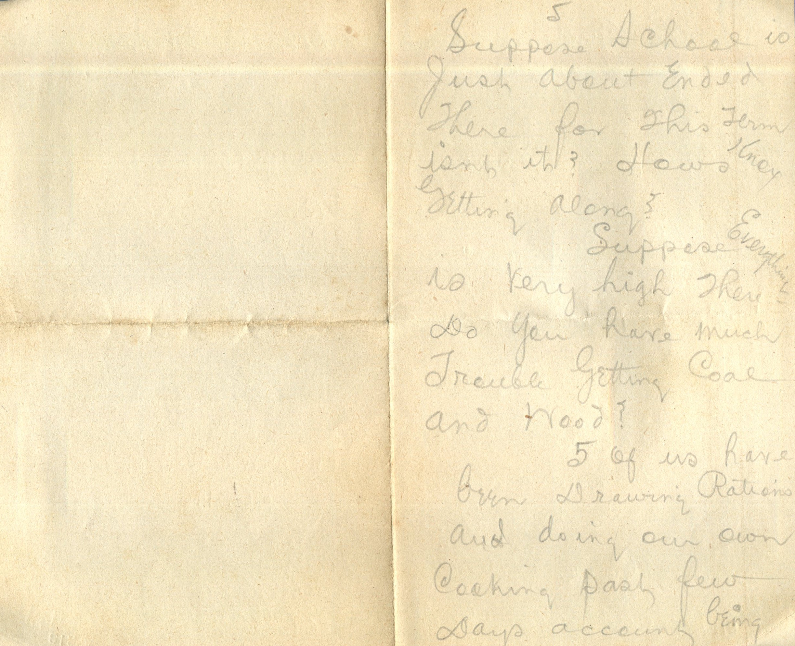
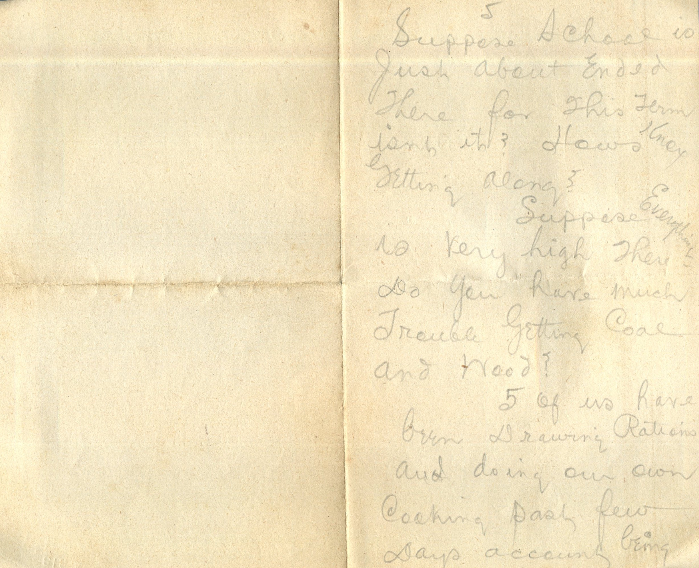

From: Martin Chandler, To: Elijah H. Chandler

 

From: Martin Chandler, To: Elijah H. Chandler Mailed From: France on April 4
France 4th Dearest papa, mama, and all Have had no chance to write for some time. Received 1 letter from papa and one from Grace and Lorin about 10 days ago. Was surely glad to get them and to know you are all well. They were both dated 2/5. Twas first and only mail I've received since being over here. Haven't received the package tobacco papa sent. It will come in mighty handy cause I haven't been paid for about 6 months and they haven't yet received my service record so don't know when I'll get paid except will get my service record this month, however. Are you getting the allotment regularly and did the government add anything? Well I passed a rather different Easter than I generally do. Will certainly remember next Easter where I passed this one. Can't tell you half that I'd like to. Do you hear often from Ruby and Sam? I wrote them some time ago. Will write Grace, Lorin, and Lucerne tonight - Grace promises me Audrey's picture for the asking and I sure want it. Seems that I've been away from home for ages. I will be 3 years next Dec. 12th. Have lots of real interesting work to do over here. Time just flies. We're having warm weather. A little rainy but think it will clean up soon. Suppose school is just about ended there for this term isn't it? How's Knox getting along? Suppose everything is very high there. Do you have much trouble getting coal and wood? 5 of us have been drawing rations and doing out own cooking past few days account being located quite a distance from the kitchen. Like it fine and dandy. Suppose you read each day of the doings on the Semme and know how things are going. We get the paris edition of the New York Herald here. I don't have much luck getting news out of a French paper. I can't speak much French. It's a hard language to learn. Well must close for this time. Will write as often as can. Hope this finds you all well. Lovingly, Martin If you send any tobacco select "Bull Durham." Don't hand any letters to the paper.